My role
🎯 Lead End-to-end Product Execution
Own the design process from concept to launch.
👨💼 Champion the User
Designing user centric features and user journey by implementing data from user test, user interviews and surveys.
📊 Measure & Improve
Track impact for new feature and imporvements and refine based on data together with PM and lead engineer.
✅ Enforce Quality Standards
Implement design reviews, usability checks, and QA testing to ensure consistency and a smooth user experience.
🚀 Craft Scalable UI
Create clear, consistent interfaces using Figma and maintain shared libraries and design systems.


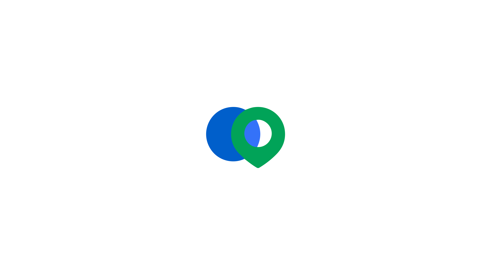
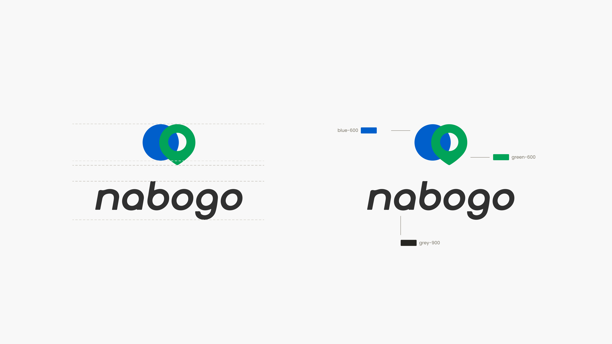

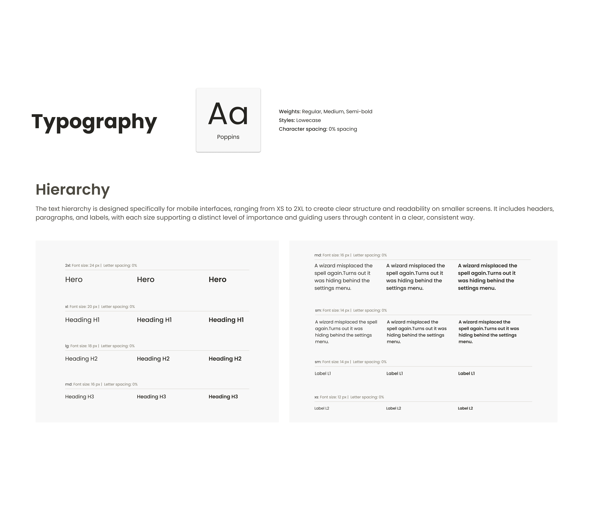
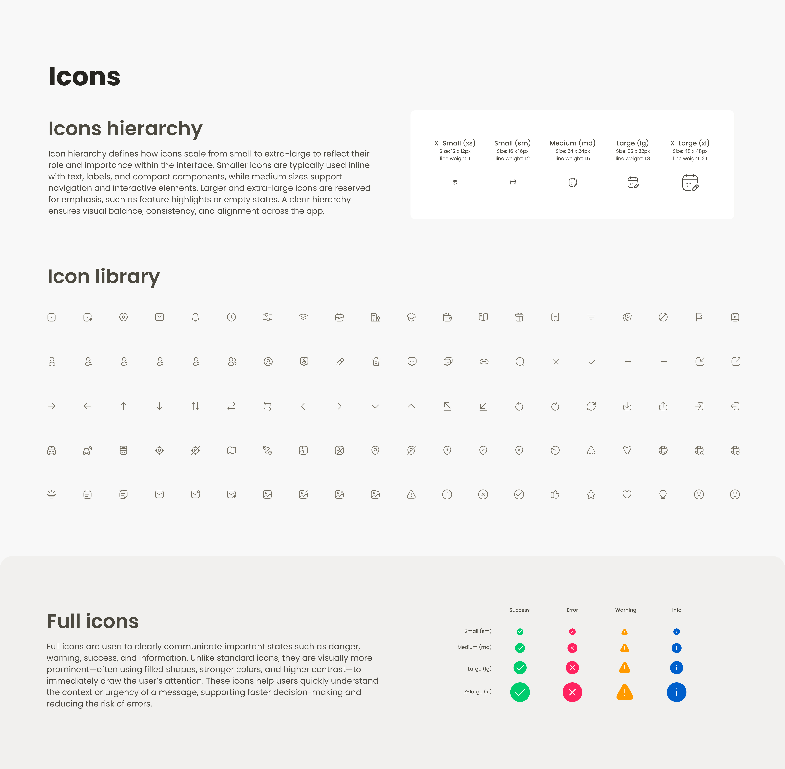
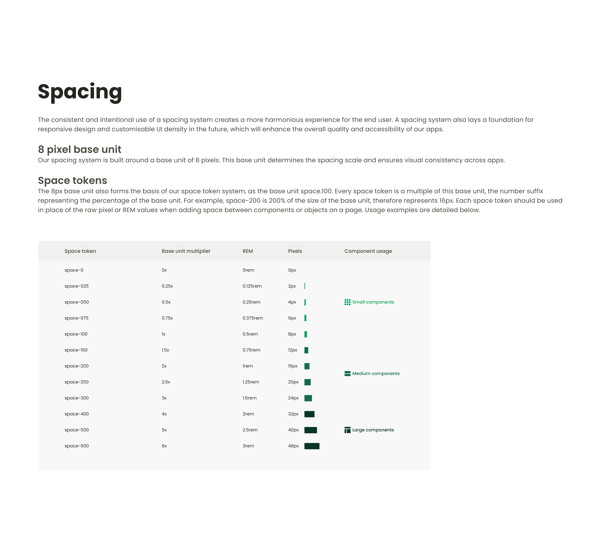


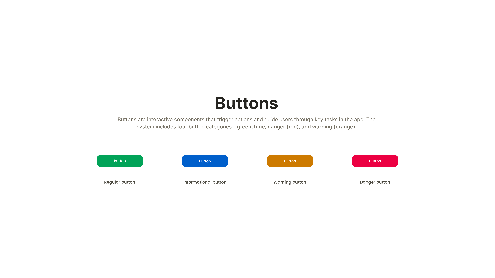
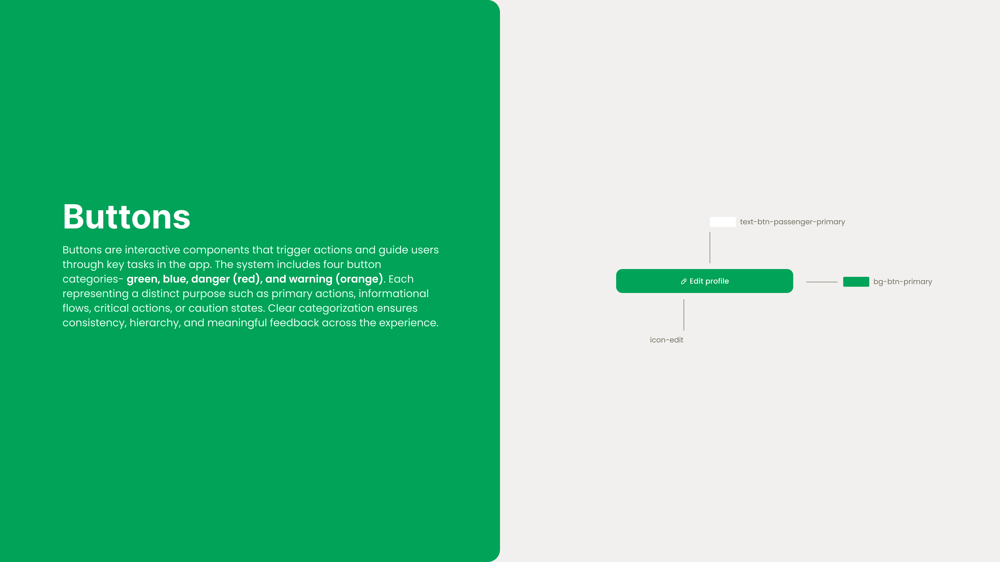


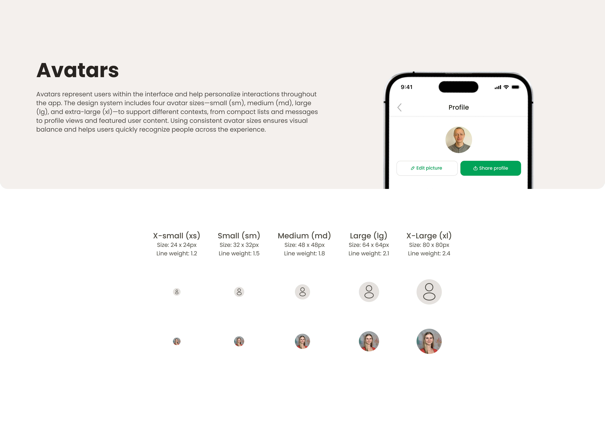
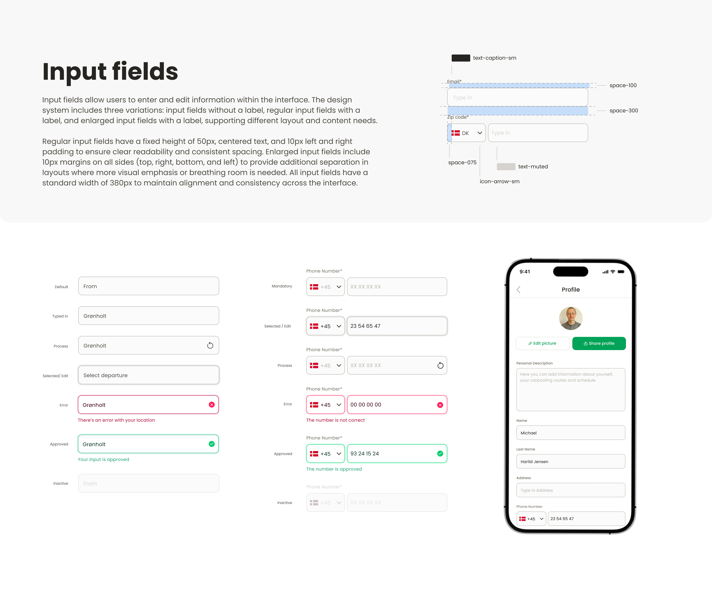
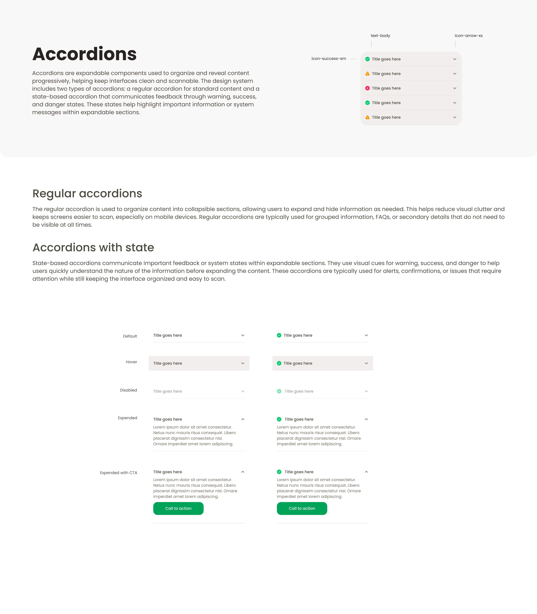
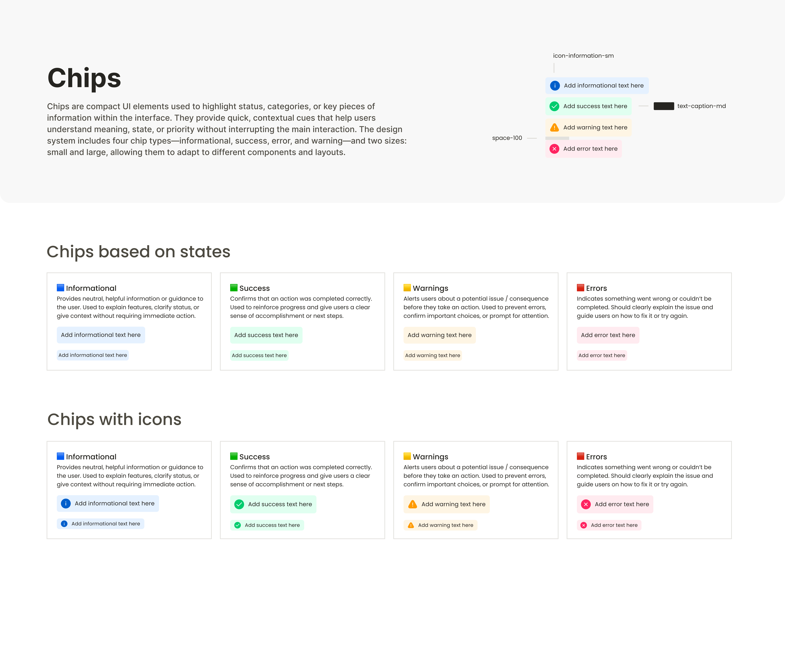
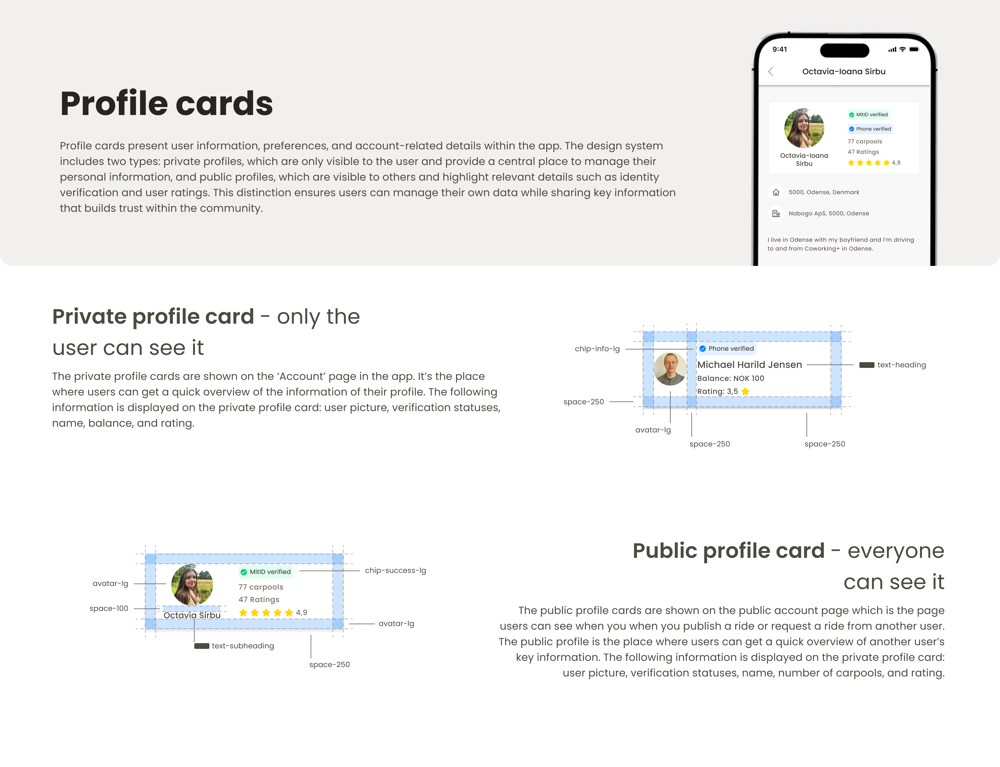